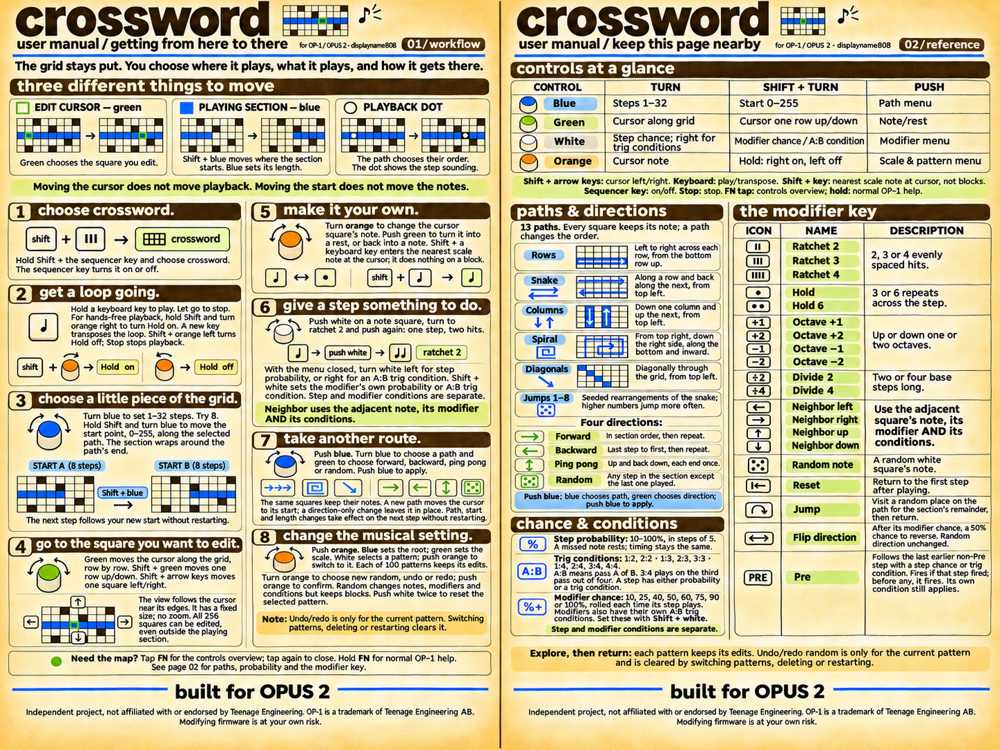

See it in motion.
The Crossword trailer · 1 minute 55 seconds.
Advanced sequencer for OP-1
256 squares. 256 moves.Crossword is a sequencing playground for the adventurous. It combines precise control with happy accidents, and it’s unlike anything ever seen on the OP-1.
Made for the original OP-1 with OPUS 2.
Most step sequencers give you a fixed number of steps; Crossword gives you 256 to explore, played in sections of up to 32. Modifiers, randomization and probability turn even short sequences into dense, evolving patterns.
The Crossword trailer · 1 minute 55 seconds.
Workflow, controls, paths, probability and the modifier key, all on one sheet.

Random, undo and redo. In the scale and pattern menu, turn orange to choose “new random”, then push orange to make it. After randomizing, turn orange to choose “undo random”; after undoing, it offers “redo random”. Each choice needs a push to confirm.
Undo belongs to the current pattern. It isn’t saved. Switching patterns, deleting a pattern or restarting clears the undo history.
Choosing a path. A new path moves the cursor to its first step, at the selected start point. Changing only the playback direction leaves the cursor where it is.
Moving around the grid. The view has a fixed size and follows the editing cursor. Shift + green moves a row up or down; shift + the arrow keys moves one square left or right.
Each note sounds with its own chance, from 10 to 100 %, in steps of 5. A note that misses is a rest for that step, and the timing stays the same.
A step plays only on certain passes through the section. For example, 1:2 plays on every first pass out of two, and 3:4 on the third pass out of four. A step can have a trig condition or a step probability, not both.
A modifier acts with a chance of 10, 25, 40, 50, 60, 75, 90 or 100 %, rolled each time the step plays. A modifier can also have its own trig condition.
A little instruction for each square.
The step plays its note 2, 3 or 4 times, spread evenly across the step.
The note repeats 3 or 6 times across the step.
Transposes the note up or down one or two octaves.
The step lasts two or four base steps (half or quarter speed).
Plays the note of the square beside it on the grid.
Plays the note of a random white square anywhere in the pattern.
After the step plays, playback returns to the first step.
After the step plays, playback jumps to a random place on the path for the rest of the section, then returns.
A roll that can reverse the playback direction.
Plays only if the most recent earlier step with a condition (or a probability under 100 %) fired.
Each square can be a block, or a note with one note value, one step probability or trig condition, and either no modifier or one modifier with a chance or a trig condition.
That is 1 + 49 × 28 × 341 = 467,853 possibilities per square. A pattern has 256 squares, so it has 467,853256, about 101452, possible contents. Playback settings (path, direction, start point and section length) add another 425,984 combinations on top of that.
OPUS prioritizes audio over graphics. FPS drops can occur when using stock OP-1 engines.
Parameter locks for synth, drum, envelope and FX pages.
mods folder in Disk Mode. Eject and restart.